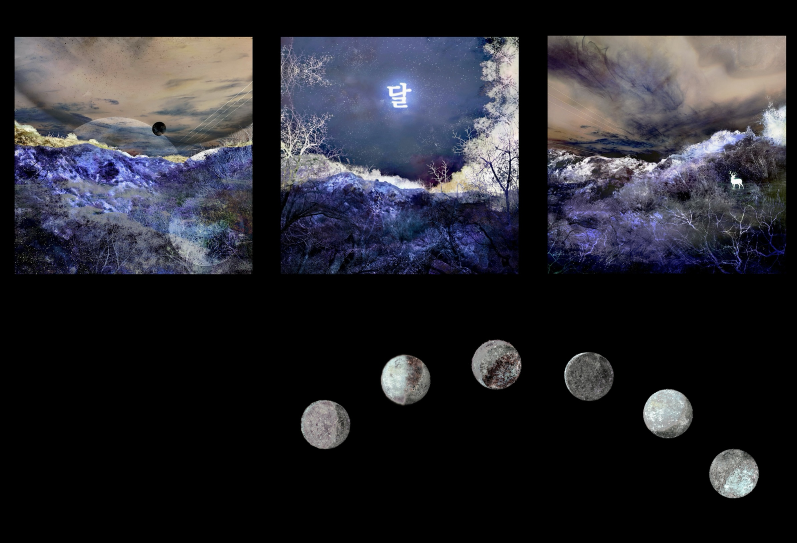

Three Pieces of Imagination (Above), Digital Art, 2022
O (Below), Digital Art, 2024
Woo Haran (b. 2000, South Korea) is a composer and visual artist based in Seoul. His creative works unfold within the conceptual universe of [O8kk], where symbols of moon[O], clouds[8], and stars[kk] shape a poetic system of his storytelling and artistic exploration.
Woo studied music composition at the California Institute of the Arts(CalArts) under mentors Michael Pisaro, Ulrich Krieger, and Karen Tanaka, developing a multidisciplinary approach that bridges sound, image, and performance.
In 2021, Woo was named National Second Winner by the Music Teachers’ National Association(MTNA) in the United States for a solo piano composition incorporating Korean folk music. In 2024, he received the Special Prize at the Arte Laguna Prize in Venice, Italy for a video artwork that explores the fluid relationship between nature and digital structure.
His works have been presented at experimental and digital art platforms including Radiophrenia Glasgow, the London Experimental Film Festival, Athens Digital Arts Festival(ADAF), Music For Your Inbox in Los Angeles, GUI/GOOEY in Brooklyn, and the Arte Laguna Prize. Drawing from both compositional and visual traditions, his works often merge sound, gesture, and symbolic imagery into dreamlike, nonlinear narratives.
With a vision to create works that stand alone yet interconnect as part of a larger, evolving narrative, Woo invites audiences into a dynamic universe where diverse media come together to tell profound, evolving stories.
[O8kk] is an ever-expanding network—where the moon [O], clouds [8], and stars [kk] form an interconnected realm. It explores the tension between multiplicity and unity, the nature of dispersed identity, and what can be described as Plural Oneness(다일성;多一性)—a state where singularity and plurality coexist in continuous transformation.
Within [O8kk], creative works are not isolated but resonate as echoes of one another, forming a greater whole. Just as its objects and figures exist as distinct yet interwoven presences, they manifest through repetition and variation—reflecting, refracting, and evolving across dimensions. Singular yet plural, separate yet inseparable, they embody the fundamental principle of Plural Oneness.
Everything is original in itself, yet there is no distinction between fake and authentic—each form exists as an iteration of another, drifting between self and reflection, original and resonance.
Here, the singular is also plural, and the plural is also singular, emerging into many and converging as one.